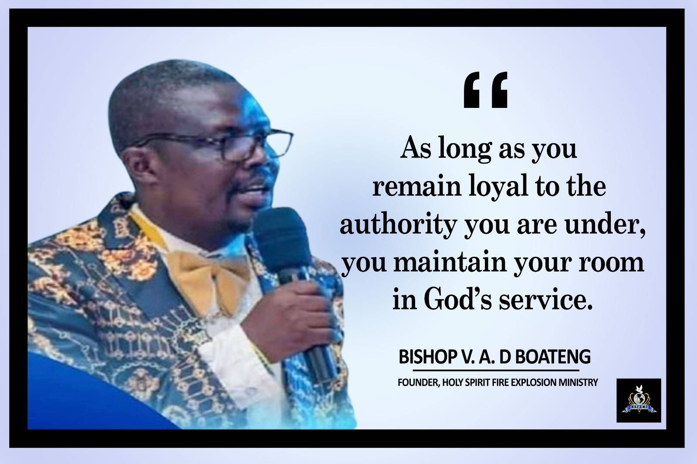

Holy Spirit Fire Explosion Ministry began in Kumasi, Ghana, through a divine vision to raise men and women who burn with the fire of the Holy Spirit. By God's grace, what started as a small gathering has grown into a thriving ministry with branches across Ghana and extending internationally, including Canada. We remain committed to preaching the Gospel of Jesus Christ, raising disciples, transforming lives, and impacting nations.
Experiencing God's Presence through worship and prayer.
Teaching God's Word with truth and sound doctrine.
Branches in Ghana and Canada, reaching the nations.
Winning souls and transforming communities for Christ.
Bishop Vincent Albert Duodo Boateng is the Founder and Lead Pastor of Holy Spirit Fire Explosion Ministry. His passion is to see lives transformed by the power of the Holy Spirit, raising believers who walk in holiness, faith, and Kingdom purpose. Through his leadership, the ministry continues to expand from Kumasi to many regions and across international borders, bringing hope and revival to countless people.
Whether you are searching for a church home, seeking spiritual growth, or desiring a deeper encounter with God, Holy Spirit Fire Explosion Ministry welcomes you. There is a place for you here.
Join Us This Sunday